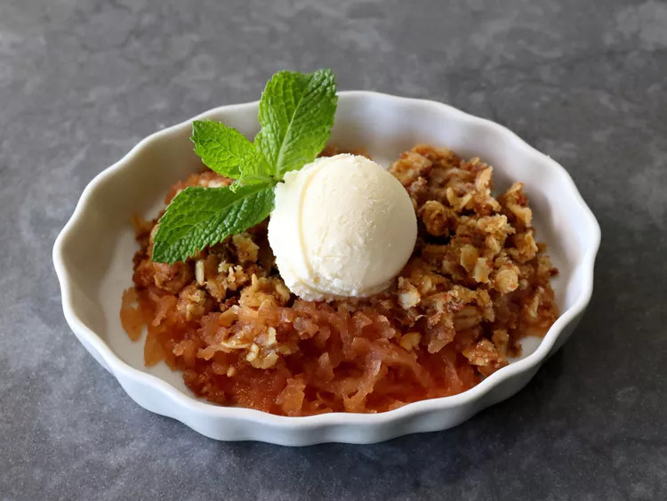

Grate Apple Crisps

With a luxurious texture and a flavor that approaches apple butter, Chef John's apple crisp is truly delicious. It also skips the tedious peeling, coring, and slicing step. You'll definitely want a small scoop of vanilla ice cream on top.
Submitted by James Williams October 20th 2024
Ingredients
Apples
- 2 tablespoons unsalted butter, softened
- 6 apples
- 1 lemon, juiced
- 1/4 teaspoon ground cinnamon
- 1/2 teaspoon cornstarch
- 1/3 cup white sugar
- 1/3 cup packed brown sugar
Toppings
- 1/2 cup rolled oats
- 1/2 cup Grape Nuts® cereal
- 1/2 cup all-purpose flour
- 1/4 cup white sugar
- 1/4 cup brown sugar
- 1/2 cup melted butter
Directions
- Preheat the oven to 375 degrees F (190 degrees C). Generously grease a shallow 2-quart baking dish with 2 tablespoons butter, and set aside.
- Grate apples into a bowl, and add lemon juice, cinnamon, cornstarch, white sugar, and brown sugar. Mix thoroughly, and transfer into the prepared baking dish.
- Add oats, Grape Nuts, flour, white sugar, brown sugar, and melted butter into the bowl used for the apples, and stir thoroughly until everything is evenly coated with melted butter; spread mixture evenly over the apples.
- Bake in the preheated oven until the apple layer has thickened, is bubbling around the sides, and topping is golden brown, about 1 hour.
- Remove and let cool to warm before serving, or chill before serving if you prefer.